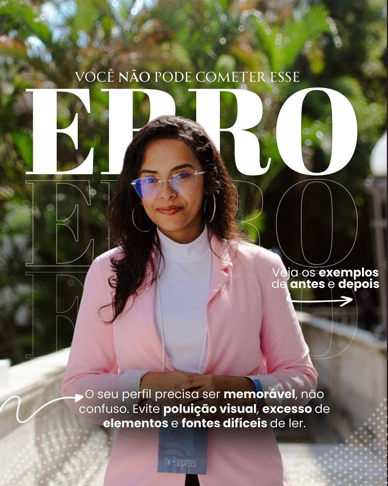
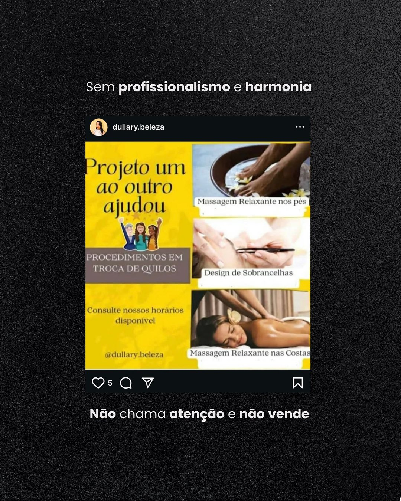
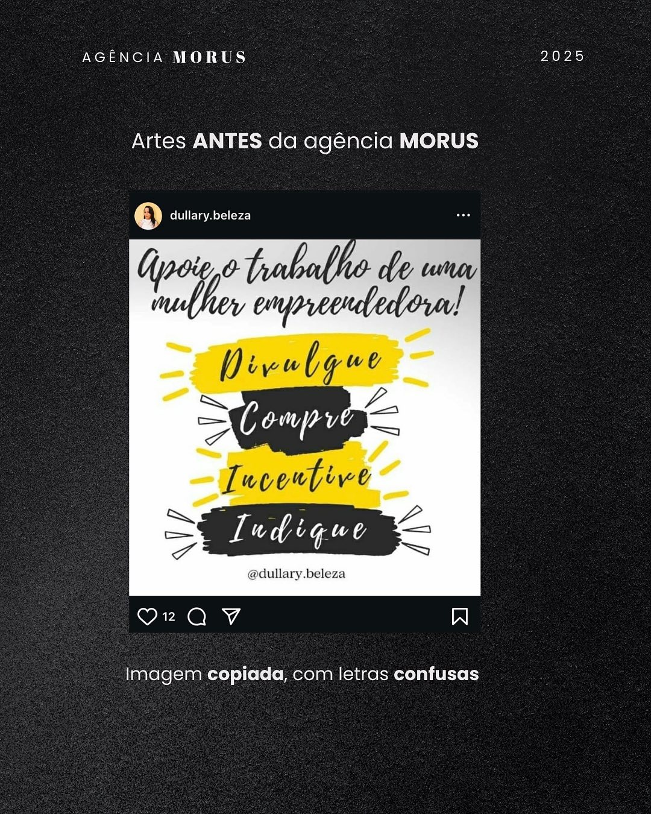

Estratégia e posicionamento
Definição de direção, diferenciação, público e narrativa para sua marca ocupar um espaço único.
Unimos estratégia, direção criativa e conteúdo premium para transformar presença digital em percepção de valor e novos clientes.
Publicar sem direção deixa sua empresa parecida com todas as outras. O problema não é falta de conteúdo — é falta de uma estratégia que conecte o que sua marca é ao que o cliente precisa perceber.
A Morus nasceu para elevar o padrão da presença digital. Tratamos cada projeto como construção de marca: estratégia antes da estética, clareza antes da execução e crescimento antes da vaidade.
Criamos sistemas de comunicação que transformam empresas em referências dentro do próprio mercado.
Cada entrega faz parte de um sistema pensado para aumentar autoridade, consistência e percepção de valor.
Definição de direção, diferenciação, público e narrativa para sua marca ocupar um espaço único.
Fotos e vídeos com direção criativa para comunicar qualidade antes mesmo da primeira conversa.
Planejamento, conteúdo e acompanhamento para transformar consistência em crescimento real.
Um sistema visual reconhecível, coerente e alinhado à personalidade da sua empresa.
Conceito, roteiro e execução para lançamentos, posicionamentos e momentos importantes.
Decisões guiadas por dados para refinar a comunicação e melhorar o desempenho continuamente.
Da primeira conversa à análise dos resultados, construímos junto com você uma presença digital que faz sentido para o negócio.
Começar um projetoEntendemos o negócio, o público, o momento e os objetivos da marca.
Definimos posicionamento, pilares de conteúdo e linguagem visual.
Transformamos estratégia em conteúdo com acabamento e consistência.
Analisamos sinais, aprendemos e otimizamos o próximo ciclo.
Direção criativa, narrativa e conteúdo trabalhando juntos para tornar cada ponto de contato mais forte.



O escopo final é personalizado depois do diagnóstico. Estes são os pontos de partida mais comuns.
Para quem precisa organizar posicionamento e construir uma presença consistente.
Estratégia, produção e gestão trabalhando juntas para acelerar percepção de valor.
Para empresas maduras que querem ocupar a liderança de comunicação no seu mercado.
“A Morus redefiniu completamente nossa presença digital. Passamos de uma marca comum para uma empresa percebida como referência no mercado.”
+312% em autoridade percebida“A Morus trouxe clareza estratégica e posicionamento premium. Hoje nossa marca transmite valor, confiança e autoridade.”
5x mais percepção de valorConte o momento da sua empresa. A gente transforma esse ponto de partida em uma direção clara.
Ao enviar, abriremos uma mensagem pronta no WhatsApp.